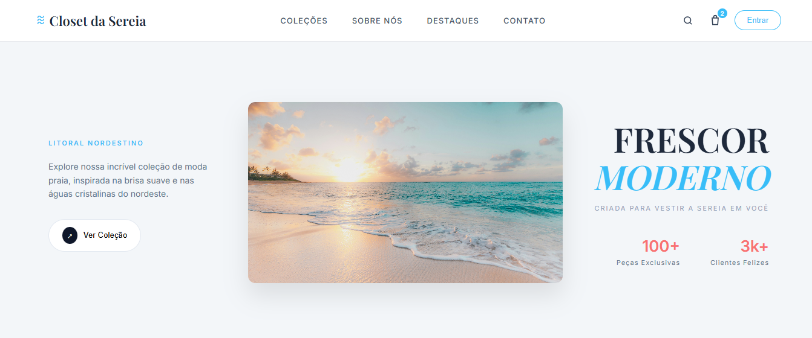
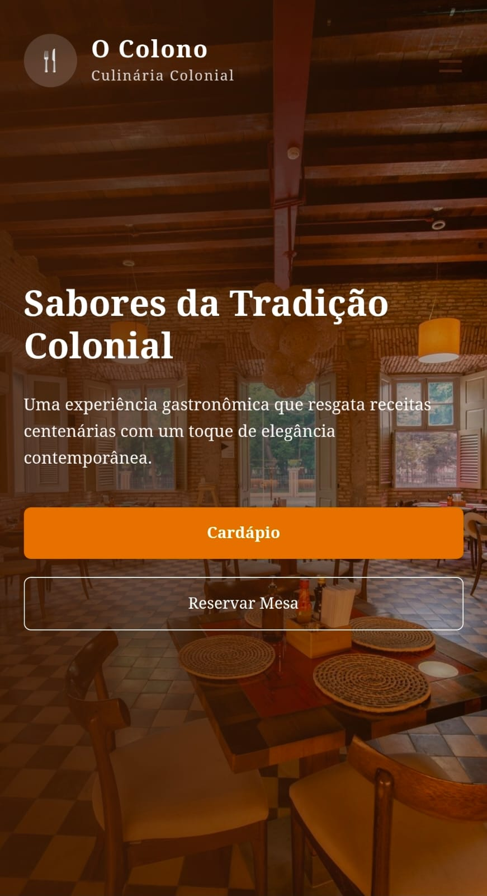

Alguns dos projetos desenvolvidos por mim.

Projeto de tela inicial de uma loja moda praia

Um menu virtual para um restaurante colonial
Um sistema institucional capaz de gerar ficha catalográficas para trabalhos de conclusão de curso